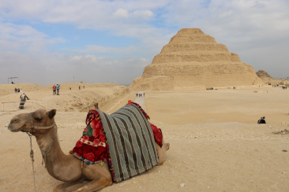
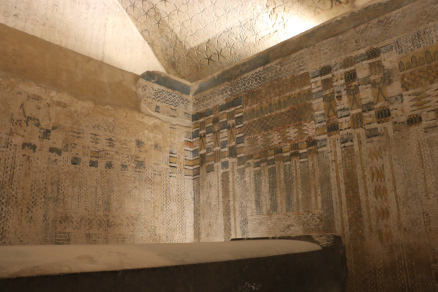

The Outside Area
The outside of Saqqara is a complex of pyramids and Temples. Right infront of the step pyramid(Which is one of the first pyramids every built) is an arena for shows and a Funerary complex.

Inside the Pyramid
The inside of one of the pyramids in the Saqqar complex. The paint used in the images is Really old but is still looks beutiful. While i can't remember which one this is, it is still hard to walk in those as you have to bend down far because the roof in some areas is really low
